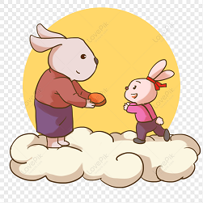

Había una vez un conejito llamado Pepito, que vivía en un pequeño bosque. Un día, Pepito rompió una maceta de flores de su mamá. Cuando su mamá le preguntó, él dijo: "No fui yo".
Capítulo 2: El Sentimiento de Pepito
Después de decir la mentira, Pepito se sintió muy mal. No podía dejar de pensar en lo que había hecho. "¿Por qué dije eso?", pensó. "Me siento tan triste."
Capítulo 3: La Reflexión de Pepito
Pepito decidió hablar con su mamá y contarle la verdad. "Mamá, yo rompí la maceta", dijo. "Lo siento mucho, no quería mentir."
Capítulo 4: El Perdón de Mamá

La mamá de Pepito lo abrazó y le dijo: "Te perdono, Pepito. Es muy valiente decir la verdad. Ahora sabemos que podemos confiar en ti. Aprendiste una gran lección sobre la honestidad."
Lección Final
Y así, Pepito aprendió que siempre es mejor decir la verdad, incluso si comete un error. Porque cuando eres honesto, las personas pueden confiar en ti y te sentirás bien contigo mismo.